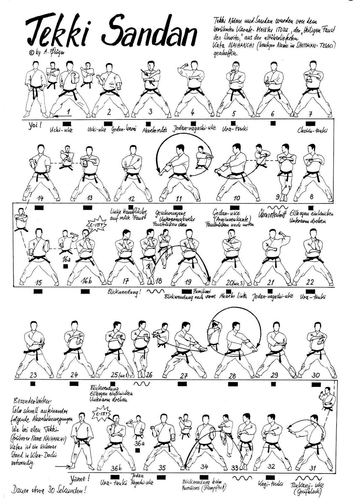

Tekki Sandan

- Yoi andando in Hachiji Dachi
- Allargo la gamba destra in Kiba Dachi ed eseguo Uchi Uke sinistro
- Ferma la posizione eseguo contemporaneamente Uchi Uke destro e Gedan Barai sinistro
- Tesa Uke sinistro e carico ruotando il braccio Age Morote Tzuki destro richiamando il dorso della mano sinistra sotto il gomito destro
- Richiamo il braccio destro al fianco ed eseguo Tzuki portando il dorso dell’avambraccio sotto il palmo aperto della mano sinistra
- Senza staccare le mani richiamo il pugno destro in Uchi Uke
- Spostamento in Shinobi Ashi verso destra ed eseguo Gedan Migi Ude Uke
- Richiamo il braccio destro ed eseguo Gedan Migi Tettsui
- Hidari Arai Uke e richiamo il braccio destro al fianco ed eseguo Tzuki portando il dorso dell’avambraccio sotto il palmo aperto della mano sinistra
- Ferma la posizione eseguo contemporaneamente Uchi Uke destro e Gedan Barai sinistro e di nuovo invertendo le braccia
- Tesa Uke destro e carico ruotando il braccio Age Morote Tzuki sinistro richiamando il dorso della mano destra sotto il gomito sinistro
- Spostamento in Shinobi Ashi verso sinistra ed eseguo un piccolo Hidari Uchi Uke
- Carico ruotando il braccio Age Morote Tzuki sinistro richiamando il dorso della mano destra sotto il gomito sinistro
- Richiamo il braccio sinistro al fianco ed eseguo Tzuki portando il dorso dell’avambraccio sotto il palmo aperto della mano destra
- Carico ed eseguo Tate Shuto destro Mawashi Tzuki Chudan sinistro
- Spostamento in Shinobi Ashi verso destra e mentre appoggio eseguo Uchi Uke sinistro
- Ferma la posizione eseguo contemporaneamente Uchi Uke destro e Gedan Barai sinistro
- Tesa Uke sinistro e carico ruotando il braccio Age Morote Tzuki destro richiamando il dorso della mano sinistra sotto il gomito destro
- Richiamo il piede destro in Hachiji Dachi.
- Yame!